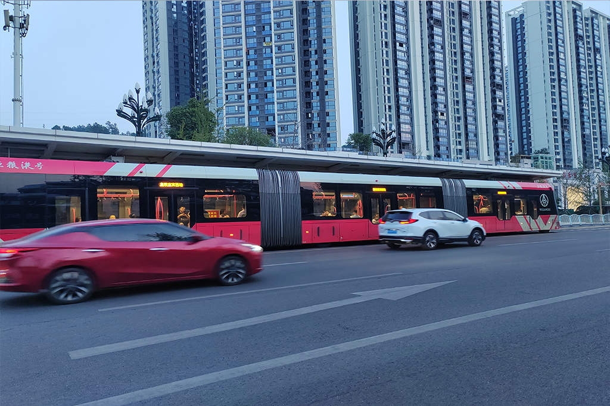
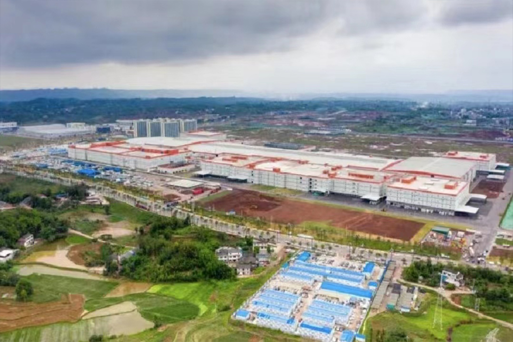
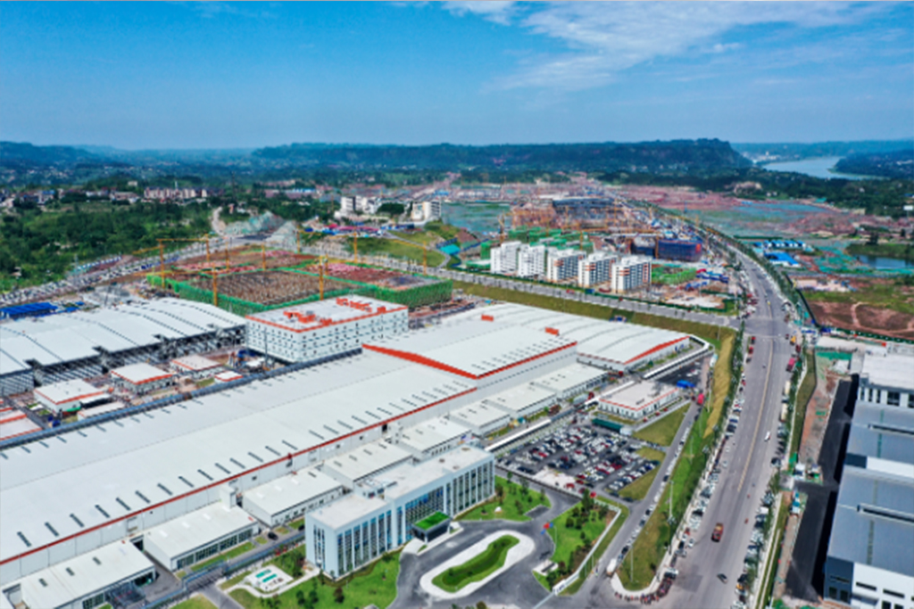

宜宾市位于中国四川省，被誉为“中国动力电池之都”。这座城市在动力电池产业方面取得了显著的成果，吸引了国内外众多企业和投资者的关注。2023 年 6 月，在中国世界动力电池大会上，宜宾被正式授予“中国动力电池之都”的称号。

宜宾市在 2014 年开始着力发展动力电池产业，引进了锂宝新材料、光原等企业。短短几年时间，宜宾市在动力电池领域取得了显著的成果。如今，宜宾市拥有全球最大的动力电池生产基地，产能约占全国的 1/3。国内外众多知名新能源汽车企业，如特斯拉、比亚迪、吉利等，都与宜宾市的企业建立了合作关系。

丰富的资源优势：宜宾市拥有丰富的锂资源，是全球锂资源的重要产区。锂是动力电池的关键原材料之一，因此，宜宾市在发展动力电池产业方面具有得天独厚的优势。 政策支持：近年来，我国政府高度重视新能源汽车产业的发展，出台了一系列政策措施，为动力电池产业的发展提供了有利条件。宜宾市政府也积极推动动力电池产业的发展，提供了一系列政策支持和优质服务。 产业链完整：宜宾市动力电池产业链完整，涵盖了从原材料、电池制造、pack 组装到新能源汽车组装等各个环节。这为动力电池产业的发展提供了良好的基础。

技术创新：宜宾市的企业在动力电池领域不断进行技术创新，提高了产品性能和质量。例如，宜宾市的企业成功研发出了全球首款量产石墨烯动力电池，具有高能量密度、长续航里程等优点。 市场前景广阔：随着全球新能源汽车市场的快速发展，动力电池的需求越来越大。宜宾市作为“中国动力电池之都”，未来发展空间广阔。
